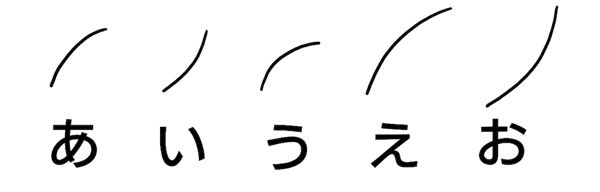
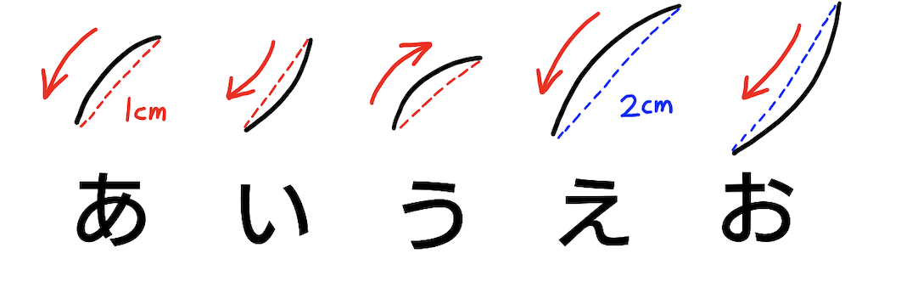

速記について
そもそも速記【そっき】とは？
速記と直線や曲線などの線や点などでできた速記文字を使い、人が話す言葉を書き取る技術です。
速記文字にはそれぞれの平仮名に対応した速記文字があります。
例えば、山根式の速記文字では「あ行」を次のようにあらわします。

速記はこれらの速記文字を使い言葉を書き取ります。
それでは、次の章では速記文字の紹介とその書き方を紹介したいと思います。
速記文字を書いてみる
ここでは先ほど紹介した「あ行」を例にして速記文字について少し説明します。

速記文字にはそれぞれ長さがあります。
画像にある赤線は1cmの長さで青線は2cmの長さで書きます。
速記文字の書き順は画像の赤矢印の方向に書きます。
画像から「え」に対応する速記文字は、「あ」の形を2cmにしたものになります。
同じく「お」に対応する速記文字は、「い」の形を2cmにしたものになります。
「あ行」以外の「か行」や「さ行」などの速記文字は速記文字一覧で紹介します。
では次にこの速記文字を実際に使ってみたいと思います。